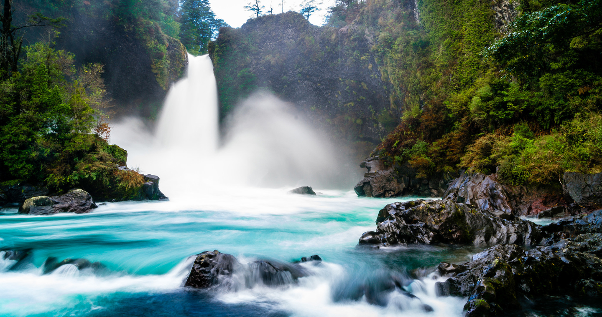
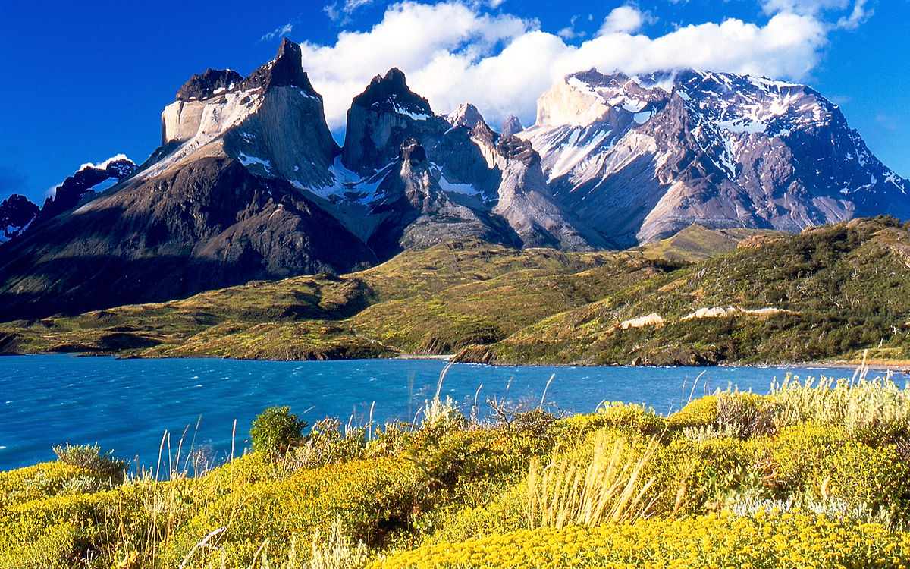

12-enero-2018
Panguipulli sorprende por su capacidad de reconversión: después del desgaste del auge maderero, las miradas del sector público y privado apuntaron hacia la conservación de su patrimonio a través del desarrollo de un turismo sustentable. De la mano de la Reserva Biológica Huilo Huilo, declarada el 2007 como Reserva de la Biósfera y reconocida internacionalmente como uno de los mejores destino sustentables del mundo, la comuna de Panguipulli, bajo la marca Sietelagos, se ha posicionado como uno de los destinos más verdes del sur de Chile. El trabajo es sostenido e innovador. Recientemente el municipio creó la Unidad de Proyectos Turísticos dependiente de la Secretaria de Planificación a objeto que toda formulación de proyectos de infraestructura tengan desde su diseño e implementación la variable turística con énfasis en accesibilidad sustentabilidad y facilitación turística. El esfuerzo privado también ha tenido una especial preocupación por incorporar a las comunidades locales. El trabajo sistemático de la Fundación Huilo Huilo, la Corporación Amigos Panguipulli, la Fundación People Help People han conseguido resultados notables que explican por qué hoy Panguipulli está en el mapa de los grandes del turismo responsable a nivel nacional.
15-enero-2018
Creado el año 1959, declarado Reserva Mundial de la Biosfera por la UNESCO el año 1979, el Parque Nacional Torres del Paine es uno de los espacios reservados de mayor importancia mundial. Mención aparte la posibilidad de estar inmerso por días o semanas recorriéndolo pedestremente lo llevan a ser considerado uno de los mejores trekkings del mundo. Sin embargo la instalación de hoteles en su interior es una amenaza contante a su equilibrio ecológico, de ahí que los proyectos ecológicos de hoteles como el Las Torres y Ecocamp Patagonia, el que obtuvo el premio otorgado por Fedetur como empresa turística más sustentable durante el 2012, han venido ha plantear la necesidad de organizar la infraestructura y servicios de modo que éstos no presionen estética y ambientalmente el parque.Ecocamp se caracteriza por realizar programas “responsables”, minimizando la huella de carbono de sus pasajeros. Llama la atención sus baños de compostaje de última generación, así como la propuesta de energía solar e hidráulica. Y los planes no paran: esperan poder contar en el corto plazo con una huerta orgánica, aumentar la cantidad de paneles solares y termo paneles, además de usar su compost como biocombustible.
La vida del viajero, va de un destino a otro, entre paisajes urbanos y naturales, entre culturas cercanas y otras desconocidas, intentando absorber lo mejor de cada uno.